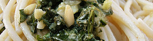

Pesto im Mörser
5,5 von 62 knoblauchzehen, 100 gr frische basilikumblätter, 2 el pinienkerne und salz im mörser zerdrücken.
dann 50 gr parmigiano, etwas romano, 8 el olivenöl und 45 gr. butter dazu. gut mischen und mit etwas kochwasser der pasta verdünnen.
